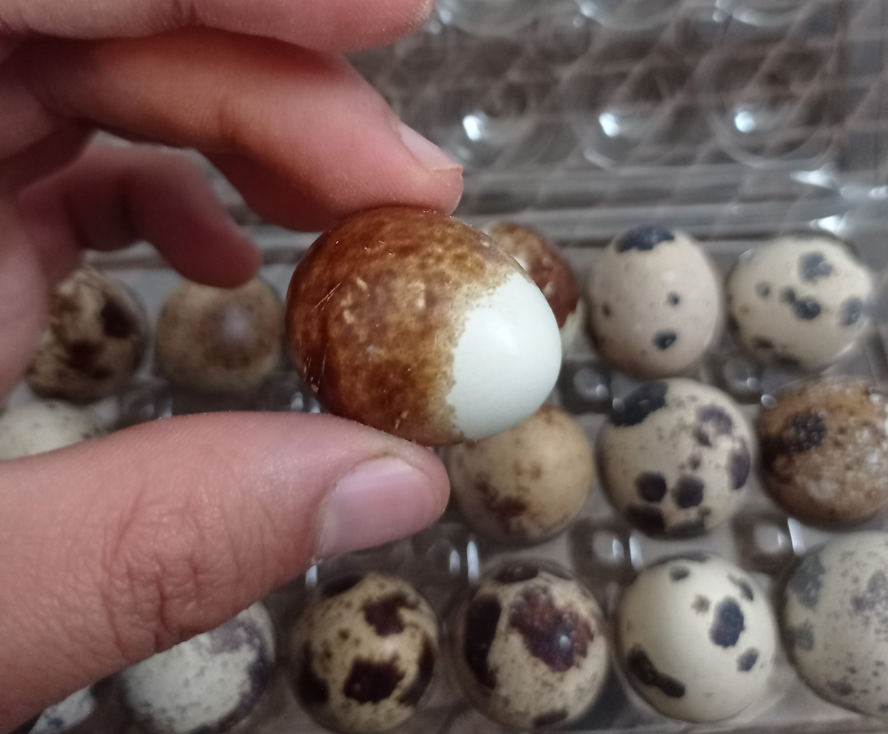

بيض السمان متوفر حاليا بمدينة قلعة السراغنة و النواحي عند عبدالرحيم الجامعي
للطلب المرجوا الاتصال بالرقم : 212613749509+
او من خلال احد مواقع التواصل الاجتماعي :


لا يوجد حاليا اي عروض او تخفيضات.
للمزيد من المعلومات اظغط هنا
| الدهون | غرام واحد |
| البروتين | غرام واحد |
| سعرات حراريّة | 14 |
| سيلينيوم | 5% من القيمة اليوميّة المُوصى بها |
| كولين | 4% من القيمة اليوميّة المُوصى بها |
| الريبوفلافين | 6% من القيمة اليوميّة المُوصى بها |
| فولات | 2% من القيمة اليوميّة المُوصى بها |
| فيتامين ب | 6% من القيمة اليوميّة المُوصى بها |
| فيتامين أ | 2% من القيمة اليوميّة المُوصى بها |
| معدن الفوسفور | 2% من القيمة اليوميّة المُوصى بها |
| مض بانتوثنيك | 3% من القيمة اليوميّة المُوصى بها |
| معدن الحديد | 2% من القيمة اليوميّة المُوصى بها |
للمزيد من المعلومات اظغط هنا